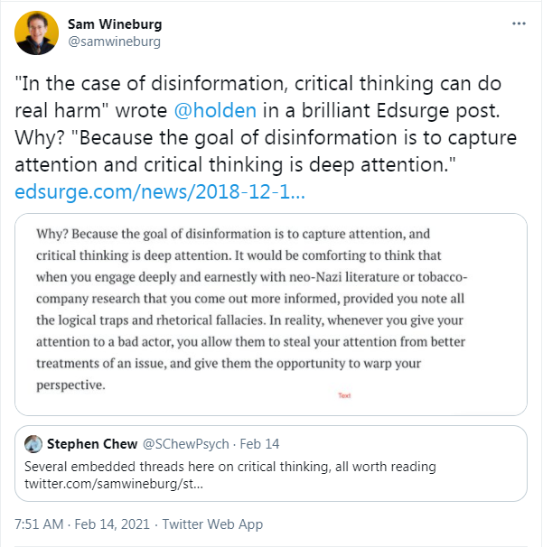

Sam Wineburg - SIFT Misinformation
February 21st, 2021
I was listening to a recent TDS when I was introduced to (((Sam Wineburg))), the character behind the SIFT method. If you don't know what that is, let me just let the (((NYT))) explain this for me.
TDC_ARTICLE_START
Misinformation rides the greased algorithmic rails of powerful social media platforms and travels at velocities and in volumes that make it nearly impossible to stop. That alone makes information warfare an unfair fight for the average internet user. But Mr. Caulfield argues that the deck is stacked even further against us. That the way we’re taught from a young age to evaluate and think critically about information is fundamentally flawed and out of step with the chaos of the current internet.
[…] In 2016, Mr. Caulfield met Mr. Wineburg, who suggested modeling the process after the way professional fact checkers assess information. Mr. Caulfield refined the practice into four simple principles:
1. Stop.
2. Investigate the source.
3. Find better coverage.
4. Trace claims, quotes and media to the original context.
Otherwise known as SIFT.
TDC_ARTICLE_STOP
Sam Wineburg
If that didn't do it enough for you, here are some of his tweets.
Go down the Rabbi Hole instead

It literally is "How to be a Non Player Character." Having said that, I'm going to go ahead and say that the technique itself is great. I completely endorse this. After all, literally my response to something printed by the CBC is going to be "LOL you believe the CBC." In fact, I would go so far as to say that one of the absolute best ways to deal with propaganda is the good old fashioned ctrl + h, as in "Find and Replace."
For example, the above article is from the (((New York Times))). Now, we could say
TDC_ARTICLE_START
"The New York Times is telling it's NPC readership that critical thinking is bad, LOLOLOLOL."
TDC_ARTICLE_STOP
This is all well and good, but I think the good old ctrl+h adds some punch. Consider the following.
TDC_ARTICLE_START
"The New York Times people who lied us into Iraq and Afghanistan with ludicrous fables about Weapons of Mass Destruction are saying that critical thinking is bad."
TDC_ARTICLE_STOP

Don't forget "muh gas baby"
You can make the ctrl+h as long as you want, the purpose is to totally dismiss the propaganda outlet as anything other than a propaganda outlet. So as far as the repulsive noseberg above's method, I definitely agree with steps 1,2,3, and even 4. Agreeing with Schlomos for the wrong reason I guess.
BTW I really love this ctrl+h method. Another example.
TDC_ARTICLE_START
Holocaust Scholars maintain that 6 million jews were gassed to death in shower room gas chambers.
->
Holocause Scholars The people who got caught lying about jews getting their heads shrunken down like Aztecs, turned into Jew Skin Lampshades, turned into Jew Fat Bars of Soap, gassed to death with diesel exhaust, American Concentration Camps, Electrified Floors, Dick Hungry German Shepards, Masturbation Machines, Jew Children Eyeball Walls, Rollercoaster Ovens, Creepy Human Experiments, Murderous Lumberjacks, and about a thousand other absurdities, maintain that jews got gassed to death in gas chambers disguised as shower rooms.
TDC_ARTICLE_STOP
 I don't think anyone needs to look at more of this propaganda, since it is so hilariously stupid. After all, (The people who told us that Jeffrey Epstein killed himself) are telling us to not think critically. (The people who tell us that there are 40,000 genders) are telling us to not think critically. (The people who told us that Bashar Al'Assad gassed his own people, twice, for no reason) are telling us to not think critically.
Here's what they look like. And below is what the people in their comment sections look like.
Enhance.
A spiteful mutant who calls itself "Facts Matter," agrees that critical thinking is bad.
I don't think anyone needs to look at more of this propaganda, since it is so hilariously stupid. After all, (The people who told us that Jeffrey Epstein killed himself) are telling us to not think critically. (The people who tell us that there are 40,000 genders) are telling us to not think critically. (The people who told us that Bashar Al'Assad gassed his own people, twice, for no reason) are telling us to not think critically.
Here's what they look like. And below is what the people in their comment sections look like.
Enhance.
A spiteful mutant who calls itself "Facts Matter," agrees that critical thinking is bad.

I don't think anyone needs to look at more of this propaganda, since it is so hilariously stupid. After all, (The people who told us that Jeffrey Epstein killed himself) are telling us to not think critically. (The people who tell us that there are 40,000 genders) are telling us to not think critically. (The people who told us that Bashar Al'Assad gassed his own people, twice, for no reason) are telling us to not think critically.
Here's what they look like. And below is what the people in their comment sections look like.
Enhance.
A spiteful mutant who calls itself "Facts Matter," agrees that critical thinking is bad.